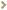
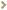
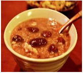

经常掉发怎么办 多吃几种护发食物
掉头发是一件很正常的事，每个人每天都会脱落几十根头发。而且，随着年龄的增大，掉头发的问题也越来越突出，如果掉头发比较严重，就要及时治疗一下了，下面小编说一下掉发治疗方法。
87人气/4推荐 2016/10/05

春季让粥帮你补血益气，健康又美丽！
中医认为，气和血是组成人体的两种重要物质，气为阳，血为阴，两者相互联系，而缺少气血则会影响身体健康，那么女人如何补血益气呢下面给大家介绍几款补气养血的粥。
87人气/4推荐 2016/10/05
治疗女性宫颈糜烂的偏方
在生活中，其实已经有很多的女性受到宫颈糜烂疾病的影响，不要以为这种妇科疾病只有已婚的女性才会出现没实际上，即便是没有结婚的少女，同样会受到这个疾病的影响，会影响到我们的生育能力还有身体健康
87人气/4推荐 2016/10/05
健康养生
经常掉发怎么办 多吃几种护发食物
掉头发是一件很正常的事，每个人每天都会脱落几十根头发
87人气/4推荐 2016/10/05
春季让粥帮你补血益气，健康又美丽！
脂肪肝是现代疾病中常见的一种，在男性中患有脂肪肝疾病的人士较多，其实脂肪
87人气/4推荐 2016/10/05
治疗女性宫颈糜烂的偏方
在生活中，其实已经有很多的女性受到宫颈糜烂疾病的影响
87人气/4推荐 2016/10/05